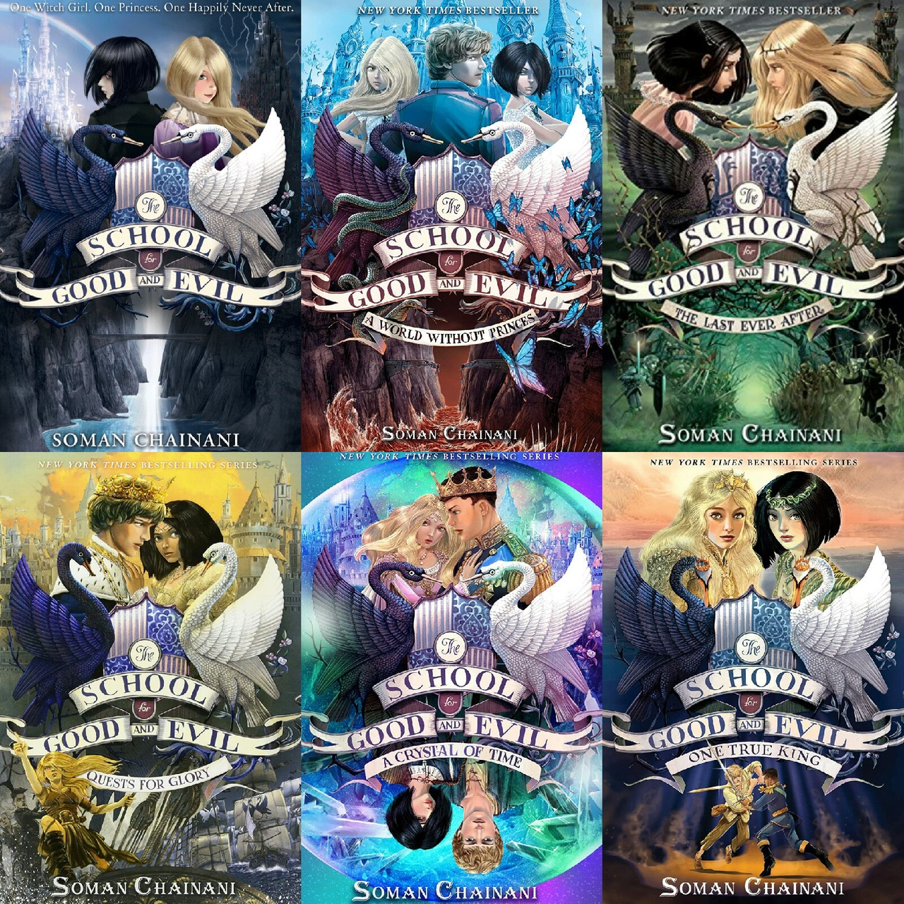
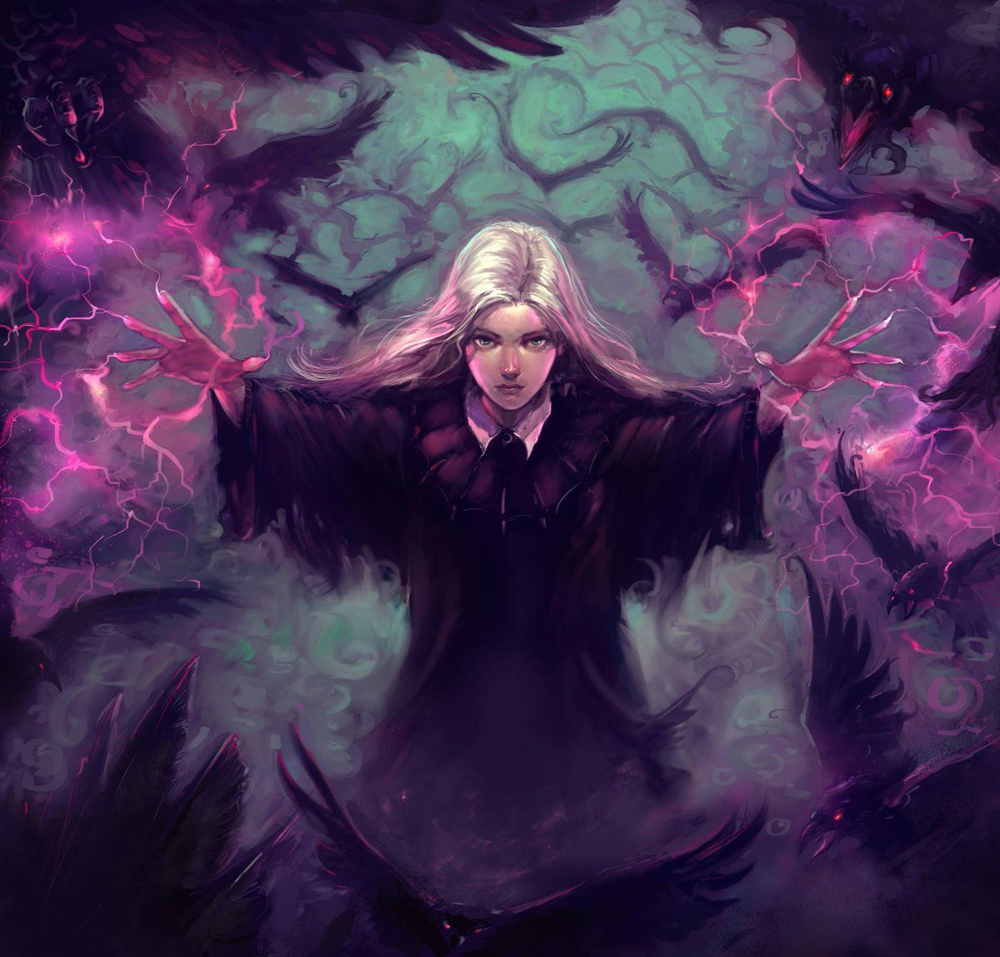
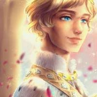

The School for Good and Evil is a fantasy hexology of books by Soman Chainani. The first novel in the series was published on May 14, 2013. The series is set in a widespread fictional location known as the Endless Woods.
The original trilogy (known as The School Years) follows the adventures of best friends Sophie and Agatha at the School for Good and Evil, an enchanted institution where children are trained to become fairytale heroes or villains, respectively. The second trilogy (The Camelot Years) follows Agatha and her true love King Tedros ascending to the role of Queen and King of the legendary kingdom, Camelot, and Sophie re-forming Evil into a new image. The final book in the original series was released on June 2, 2020, with the first book in a prequel series debuting in 2022.
When Soman Chainani was younger, he did not have access to cable, the Internet, or video games; he only had a TV and VHS tapes of Walt Disney Animation Studios's films, many of which were based on classic fairy tales. At university, the difference between the original stories and Disney's versions captivated him when he took a class about the history of fairy tales.[5] Disney took the original fairy tales — filled with complexity and darkness and often horror — and essentially pasteurized them to make them more entertaining, and arguably more "appropriate" for children. I'm always struck by the fact that the original Grimms' stories often spoke loudest to older teenaged readers, while Disney tries to peddle these tales to a younger audience, often by changing the core of the story. — Soman Chainani[5] Chainani first began working on The School for Good and Evil in June 2010.[6] Revisions, retellings, and mash-ups of fairy tales had gained popularity at the time. Works often included several cliches that had heavily influenced the portrayals Good and Evil, Boys and Girls, and Old and Young, as well as tropes that recurred in the portrayal of antagonists. Chainani, however, he had wanted to focus on something more primal: a brand-new fairy tale that was "just as unleashed and unhinged" as the older tales that would redevelop the fairy tale genre while acknowledging its past—he aimed to dispel these stereotypes and deliver an original tale devoid of cliches by creating his own series.[5]
Every four years, two children are kidnapped from the village of Gavaldon. Usually, one child is well-behaved and beautiful, and the other is ugly and peculiar. The kidnapper, referred to as "the School Master", allegedly kidnaps them to the School for Good and Evil in the surrounding Endless Woods, where they are trained to become fairytale heroes and villains.
Beautiful and pink-loving Sophie dreams of attending the School for Good and finding true love. Meanwhile, her best friend Agatha, who is ugly and withdrawn, is deemed the perfect candidate for the School for Evil. On the night of the kidnapping, both girls are kidnapped but are seemingly sent go the "wrong" schools: Sophie to the School for Evil and Agatha to the School for Good. Soon after, Sophie becomes smitten with King Arthur's son, Tedros of Camelot, who also takes notice of her. Agatha, however, only wants to go home; she and Sophie ask the School Master to go home, but the Storian begins their fairy tale. He tells them they must follow it and give them a riddle to solve; the answer is true love's kiss. Sophie must kiss Tedros to prove they are in the wrong schools and go home; he denies her, however, after she refuses to save him out of selfishness. Sophie becomes bitter and learns Agatha is her nemesis, whom she must kill to be happy. Sophie loses her beauty and attacks the schools when Tedros asks Agatha to be his princess. During the battle, Sophie learns the School Master is Evil, and the Storian is atoning him for the murder of his brother. He believes that Sophie is his true love, and her kiss will restore Evil's glory. However, Sophie denies him and sacrifices herself to save Agatha, who kisses her, reviving her. The two return home, ending their fairy tale while Tedros is left alone.
Agatha and Sophie have settled back into their old lives in Gavaldon. Agatha misses Tedros and secretly wishes for him. This triggers a wave of mysterious attacks on Sophie, which threaten the entire village and cause the two girls to be run out of town. They make their way to the School for Good and Evil, only to find it has become the School for Girls and Boys. At the School for Boys, Tedros is seeking revenge upon Sophie for supposedly stealing his true love. At the School for Girls, former Evil history teacher Evelyn Sader, who was banned from the schools years before and believed she was the School Master's true love, is now Dean. After Agatha kisses Tedros, Sophie is almost sent back to Gavaldon. However, Sader tricks Sophie into kissing the School Master using a piece of his soul he placed in her before she was exiled. The School Master is then revived and kills Sader. Agatha and Tedros are returned to Gavaldon, with the fate of Sophie and the Endless Woods unclear.
In the wake of Sophie and the School Master's kiss, Evil has been shown capable of love, and all the previous fairy tale villains are given a second chance. They quickly hunt down their heroes and murder them, weakening the shield between the world of Readers and the world of fairytales, threatening the existence of both. With the shield weakening, the sun begins to melt. After leaving Gavaldon, Agatha and Tedros rescue Sophie and recover Excalibur, which they need to destroy a ring Rafal (the School Master) gave Sophie that transforms her soul into the deepest Evil and keeps him immortal. Sophie refuses and returns to Rafal; the two sides begin to prepare for a war on the night the sun will melt completely. During the war, another hero is killed, and the shield between Gavaldon and the Woods disappears. However, when all hope is lost, Agatha convinces Sophie to destroy her ring, killing Rafal. Afterwards, Sophie becomes the Dean of the School for Evil, feeling content with her new life; Agatha and Tedros arrive at Camelot, seeking to restore it to its former glory.
In their fourth years, the students of the School for Good and Evil are sent on Quests for Glory, which they must complete to graduate. Tedros and Agatha quests are to bring Camelot back to its former glory as king and queen while Sophie becomes Dean of the School for Evil, seeking to mould evil in her own image. Tedros is unable to become king as he cannot pull Excalibur from a stone. Suddenly, Sophie and the coven, Hester, Anadil, and Dot, seem to be failing though they are seemingly not shortly after Chaddick's, Tedros' first knight, death. Dean of the School for Good Professor Dovey gives them a new quest to stop the attacks on the Endless Woods. The group decide to set off with Hort and Agatha who arrives shortly after. Suddenly, the Storian begins writing a new story, highlighting the importance of somebody named Nicola. During their journey, Agatha tells the story of the Lion and the Snake where a lion and a snake fought for the throne of Camelot. Eventually, they brought an eagle to decide who chooses the snake since he promised the eagle freedom. However, the eagle is attacked by the snake and is saves by the lion though the snake warns the lion he will return. The group is captured at Jaunt Jolie where Sophie and Agatha are taken to a "snake" covered in knife-like "eels". He reveals his own pen which tells stories from villains' perspectives. The girls later find their friends and leaders at Four Point. They are saved by a mysterious "lion" who kisses Sophie. Back at the castle, Tedros chooses his mother over his steward, Lady Gremlaine, prompting her to leave. Later, at a meeting, Tedros receives a letter from the "lion" to meet him at Sherwood Forest. During their journey, they find Lady Gremlaine to be killed as well as Lancelot. At Nottingham, they capture the snake who escapes using Kei, a former Camelot guard, who tricked Dot into giving him the keys. Later, the snake threatens an attack. While Rhian has growing popularity, Tedros is unpopular among Camelot and asks Rhian to let him kill the snake himself. The snake attacks and Tedros fights him until he is weak but is weakened as well. Instead, Agatha prevents him from fighting and commands Rhian to kill the snake instead. After killing the snake, Rhian proposes to Sophie, who accepts, and asks Tedros for the key to the case which is being used to protect Excalibur. Agatha finds out the snake and Rhian have actually been working together and attempts to warn Tedros who realises it after it's too late. Rhian pulls Excalibur from the stone, claiming to be Arthur's eldest son. Tedros and his friends, with the exception of Sophie, who is marrying Rhian, and Agatha, who is on the run, are thrown into the dungeons.
A false king has claimed the throne of Camelot, sentenced Tedros to death, and forced Sophie to be his queen. Only Agatha manages to escape. Agatha and the students at the School for Good and Evil must find a way to restore Tedros to his throne and save Camelot, before all of their fairy tales come to a lethal end.
The book opens with Anadil, Hester, and Dot searching for Sophie. They are unaware that Sophie is being controlled, and that whenever she tries to remember her past she suffers immense pain. The trio discover something is wrong when they see that Sophie is about to get married to "Rhian" (who is actually his brother Japeth). Agatha and Tedros, meanwhile, have found King Arthur's ring that can keep the Storian alive, and they use Wish Fish to find Sophie. Sophie, being controlled, attempts to kill Agatha and Agatha realizes she must be under Japeth's control. Before the fight can truly become a large-scale war, Excalibur returns to the stone and King Arthur's voice informs everyone that there must be a contest to prove whether Tedros is king or Japeth is king; the winner will be king and the loser will be beheaded. Tedros also learns that Japeth and Rhian were not King Arthur's sons at all, but their true parents are still unknown. Agatha, Tedros, Hort, and Nicola set off to help Tedros achieve the first test, and in doing so find a version of Merlin turned into a baby. Sophie, meanwhile, is on a hunt to find out more about her past despite the pain it gives her. She discovers the snake 'scims' that Japeth can create must be in her head, feeding on her memories, and uses her powers to painfully take them from her head and escapes. Hester, Anadil, and Dot, meanwhile, search for Dot's dad, who they believe may still be alive; Japeth catches up to Sophie as she in turn catches up to Tedros, Agatha, Hort, and Nicola. During a battle, it is discovered that Japeth is the son of Rafal, a villain in the previous story arc. Eventually, after Tedros and Japeth complete more tests, the time comes for the winner to be selected. Japeth is selected, and Tedros is beheaded; however, Merlin revives Tedros and the results are shown to be a mistake, and Japeth is beheaded instead. Tedros and Agatha become King and Queen of Camelot, while Nicola and Hort break up and Sophie pursues a romantic relationship with him, and Anadil and Hester are hinted at being in a romantic relationship as well.
